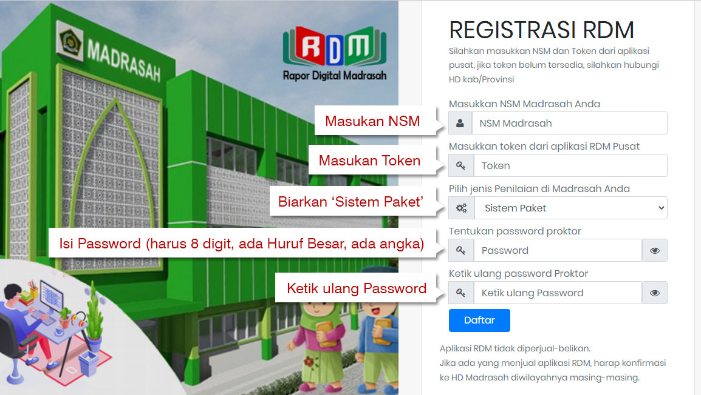

Daftar isi:
Cara Registrasi RDM
Buka link/tautan yang kami berikan, setelah terbuka isi sesuai panduan gambar di bawah ini
Setelah diisi, klik Daftar, kemudian tunggu sampai Registrasi sukses.
Video Tutorial Setting RDM untuk RA
Video Cara Pengisian Rapor RDM untuk Guru RA
CP dan Contoh Deskripsi Penilaian Panca Cinta
Contoh Deskripsi Penilaian Panca Cinta dan 8 Dimensi Profil Lulusan